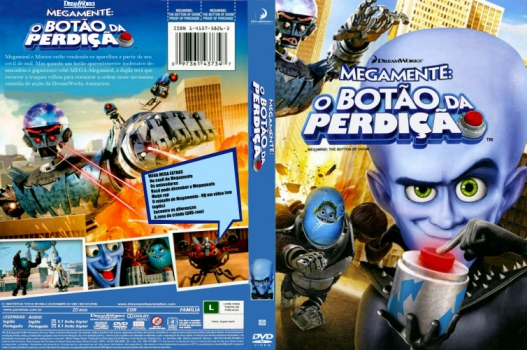

Outro Título:Megamind: The Button of Doom
País:United States, 16 minutos
Idiomas falados:Inglês, Português
Gênero(s):Animação, Ação, Comédia, Família, Sci-Fi
Diretor(s):Simon J. Smith
Escritor(es):Brent Simons, Alan Schoolcraft
Codec:MPEG-2 (DVD)
Número: 5812


Certificado:
Sinopse:
Alguém apertou o Botão da Perdição e libertou o robô gigante Mega-Megamente. Agora, Megamente e Criado terão que usar velhos truques para restaurar a ordem.
Elenco:

Tipo de mídia: DVD5,
Legendas: Inglês, Português, Sem Legendas
Alugado: Não
Tela: Anamorphic Widescreen